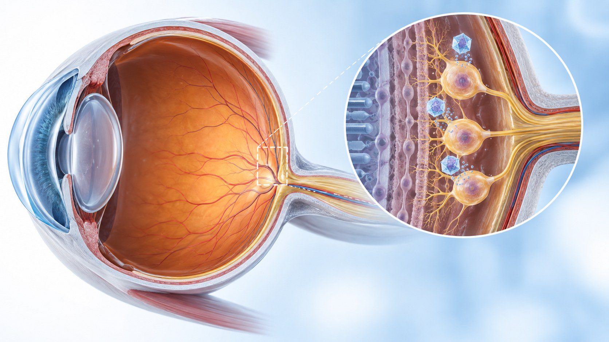
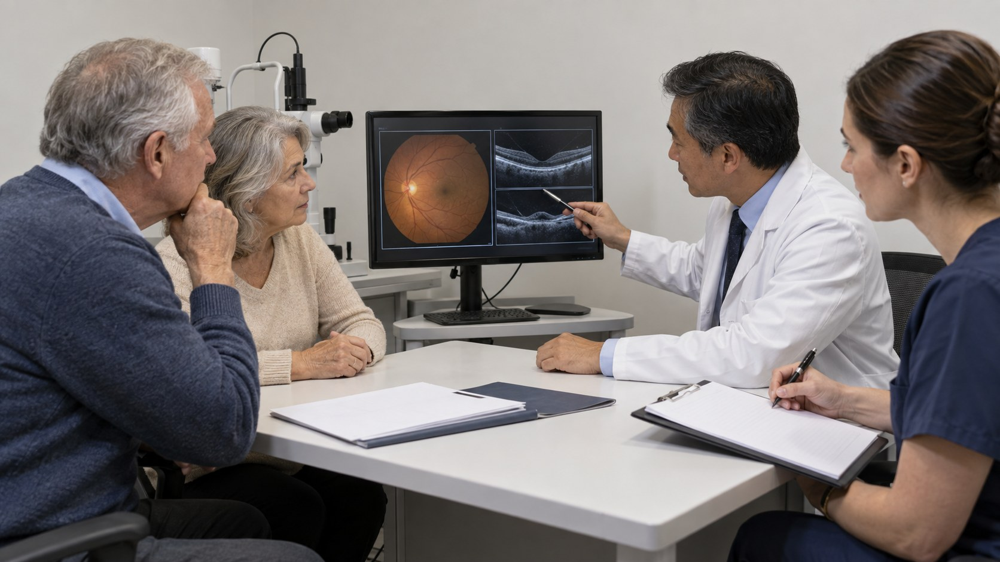
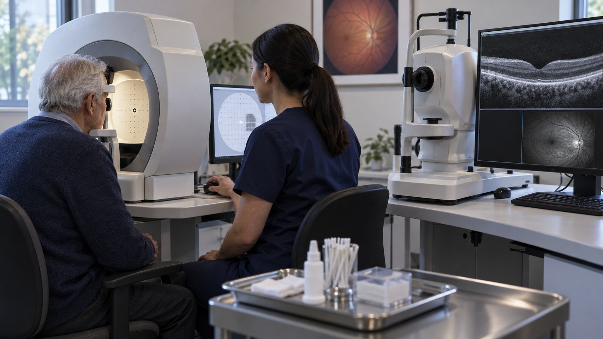

Szybka odpowiedź
ER-100 nie jest dostępnym „zastrzykiem odmładzającym”. To eksperymentalna terapia AAV podawana do jednego oka w pierwszym badaniu na ludziach. Rekord ClinicalTrials.gov sprawdzony 26 września 2026 roku podaje fazę 1, rekrutację, do 18 uczestników z jaskrą otwartego kąta lub NAION i obserwację bezpieczeństwa do 5 lat. Rekord nadal nie zawiera wyników badania.
Kluczowe wnioski
- Badanie NCT07290244 jest rekrutującym badaniem fazy 1, którego głównym celem jest bezpieczeństwo i tolerancja.
- ER-100 podaje się doszklistkowo do jednego oka, a ekspresję konstruktu aktywuje doustna doksycyklina według protokołu.
- Plan obejmuje do 18 osób: 12 z jaskrą otwartego kąta i 6 z NAION.
- Brak opublikowanych wyników klinicznych oznacza, że nie wiadomo jeszcze, czy terapia poprawia widzenie u ludzi.
Czym dokładnie jest ER-100?
ER-100 to badany kandydat terapii epigenetycznej wykorzystujący wektor AAV i regulowaną ekspresję czynników OSK. W badaniu podaje się pojedynczą dawkę doszklistkowo do jednego oka. Określenie „cofanie wieku komórek” pochodzi z hipotez i danych przedklinicznych; nie jest zatwierdzonym wskazaniem ani wynikiem leczenia człowieka.

Kontekst biologii starzenia omawia artykuł o regeneracji układu nerwowego.
Kogo obejmuje badanie fazy 1?
Rejestr planuje do 18 dorosłych: 12 z jaskrą otwartego kąta i 6 z niearterytyczną przednią niedokrwienną neuropatią nerwu wzrokowego, czyli NAION. To nie jest badanie zdrowych osób ani terapia całego organizmu. Kwalifikacja obejmuje szczegółowe kryteria okulistyczne i medyczne.

Objawów oka nie należy porównywać z kryteriami badania na własną rękę; profilaktykę wzroku uwzględnia przegląd badań po 50-tce.
Co mierzy badanie i kiedy poznamy odpowiedź?
Pierwszorzędowe cele dotyczą bezpieczeństwa, tolerancji i toksyczności ograniczającej dawkę. Protokół zawiera także eksploracyjne pomiary widzenia oraz obrazowania, ale nie zamienia ich w dowód skuteczności przed publikacją wyników. Pierwotne zakończenie oszacowano na maj 2027 roku, a pełne badanie na marzec 2032 roku.

Wynik komunikatu prasowego należy oddzielać od danych w rejestrze, podobnie jak przy innych technologiach reklamowanych przed mocnymi dowodami.
Czy ER-100 odmładza całe ciało?
Nie ma na to danych klinicznych. Droga podania, populacja i cele badania dotyczą oka oraz dwóch neuropatii nerwu wzrokowego. Firma bada dodatkowe zastosowania przedklinicznie, lecz nie oznacza to wykazanej skuteczności w mięśniach, mózgu, skórze ani długości życia człowieka. Taki wniosek wykraczałby poza dostępne wyniki.
Twierdzenia o długowieczności warto oceniać według różnicy między healthspan i lifespan.
| Element | Stan | Czego nie dowodzi? |
|---|---|---|
| Faza | Faza 1 | Skuteczności klinicznej |
| Liczba uczestników | Do 18 osób | Działania w całej populacji |
| Podanie | Jedno oko, iniekcja doszklistkowa | Odmładzania całego ciała |
| Wyniki | Brak opublikowanych wyników | Poprawy widzenia lub długowieczności |
Pierwsza dawka u człowieka rozpoczyna sprawdzanie bezpieczeństwa; nie kończy sprawdzania skuteczności.
Najczęściej zadawane pytania
Czy ER-100 jest już dostępny jako lek?
Nie. To eksperymentalna interwencja w badaniu fazy 1, a nie zatwierdzona terapia do sprzedaży.
Ile osób obejmuje badanie ER-100?
Rejestr przewiduje maksymalnie 18 uczestników: 12 z jaskrą otwartego kąta i 6 z NAION.
Czy są już wyniki skuteczności?
Nie. Na 26 września 2026 roku rejestr nie zawierał opublikowanych wyników tego badania.
Czy ER-100 odmładza całe ciało?
Nie ma takich danych klinicznych. Badanie dotyczy pojedynczego oka i określonych neuropatii nerwu wzrokowego.
Źródła
- ClinicalTrials.gov NCT07290244 — rekord sprawdzony 26.09.2026
- Life Biosciences - ER-100 pipeline
- Partial reprogramming restores vision in mice
- FDA - phases of clinical trials
Uwaga: Artykuł ma charakter informacyjny i edukacyjny. Nie zastępuje konsultacji, diagnozy ani indywidualnego leczenia.